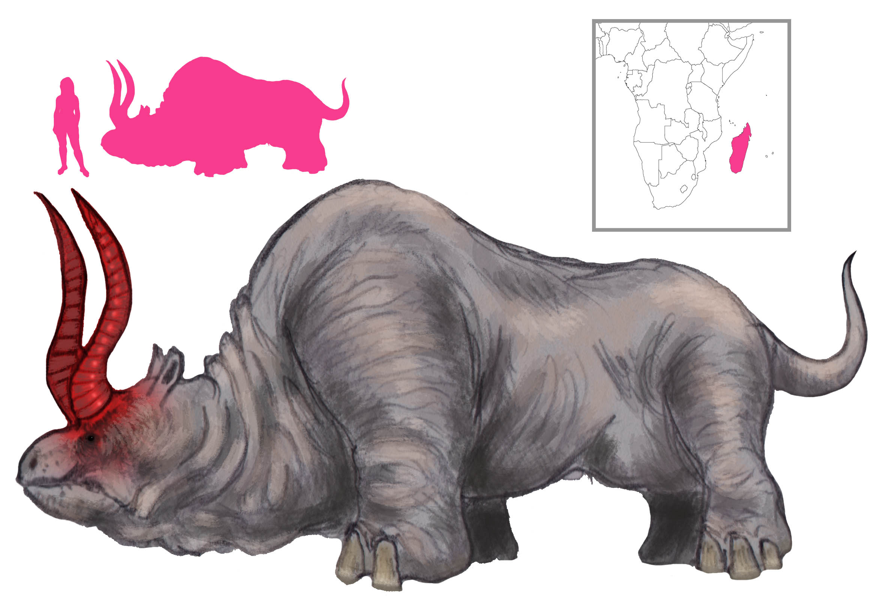

Ахлис
латинское название животного с негнущимися ногами и огромной нижней губой, а в остальном похожего на лося

Кикимора
в славянской мифологии беспокойный домашний дух исключительно женского пола, жена или сестра домового

Лаломена
в фольклоре мальгашей (Мадагаскар), похожее на быка, водяное существо с огромными ярко-красными рогами

Путис
B латышской мифологии огнедышащий многоглавый дракон , который будучи прирученным приносит в дом богатство